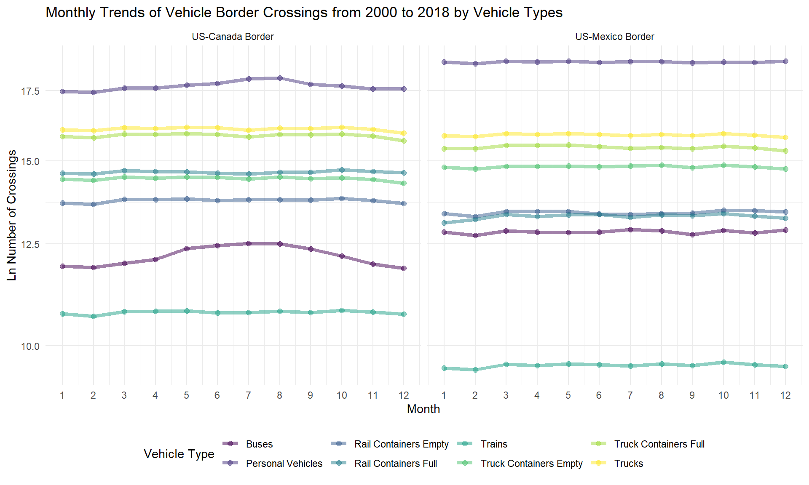
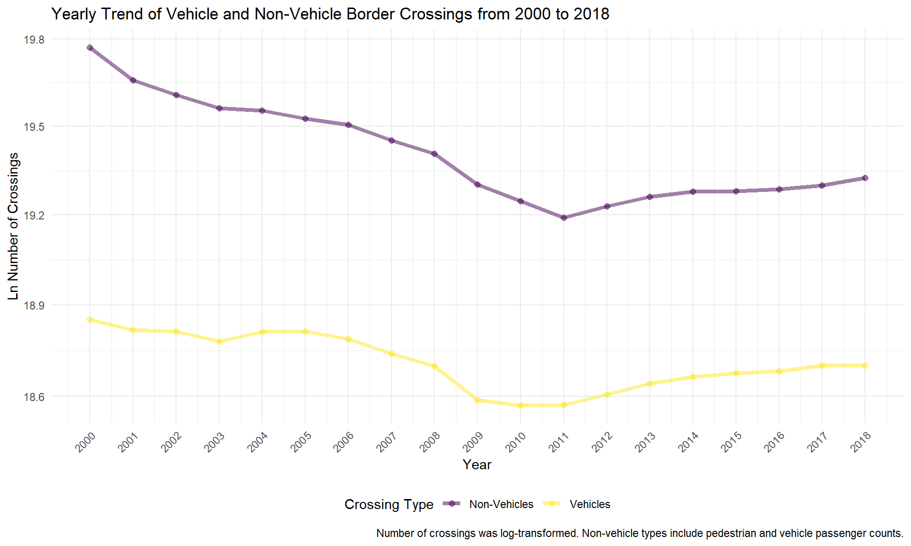
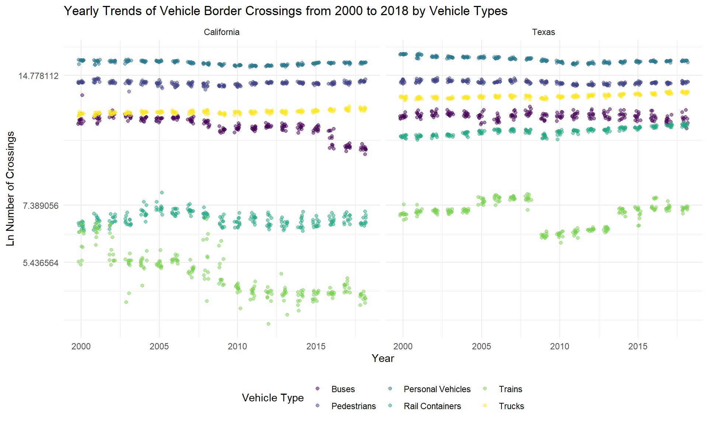

Vehicle and Non-Vehicle Border Crossing Trends
Monthly Trends
vehicles_monthly <-
border_crossing_df %>%
filter(vehicle == "Vehicles") %>%
group_by(border, measure, month) %>%
summarize(num = sum(value))
vehicles_monthly %>%
mutate(measure = as.factor(measure), border = as.factor(border)) %>%
ungroup() %>%
ggplot(aes(x = month, y = log(num), group = measure , color = measure)) +
geom_point(size = 2, alpha = 0.5) +
geom_line(size = 1.5, alpha = 0.5) +
facet_grid(~border) +
theme(legend.position = "bottom") +
scale_x_continuous(limits = c(1,12), breaks = c(1:12)) +
scale_y_continuous(trans = scales::log_trans(base = exp(1))) +
labs(title = "Monthly Trends of Vehicle Border Crossings from 2000 to 2018 by Vehicle Types",
x = "Month",
y = "Ln Number of Crossings",
color = "Vehicle Type")
There are more buses and personal vehicle crossings on average at US-Mexico border, but there are more train crossings at the US-Canada border. Looking further at the monthly trends, there is some seasonality in US-Canada border crossings for buses and personal vehicles during the summer months.
The US-Mexico border has about the same number of crossings throughout the months for both empty and full rail containers, whereas the US-Canada border has consistently greater full rail container crossings.
Yearly trends
vehicles_yearly <-
border_crossing_df %>%
group_by(vehicle, year) %>%
summarize(num = sum(value))
vehicles_yearly %>%
ggplot(aes(x = year, y = log(num), color = as.factor(vehicle))) +
geom_point(size = 2, alpha = 0.5) +
geom_line(size = 1.5, alpha = 0.5) +
theme(legend.position = "bottom") +
scale_x_continuous(limits = c(2000,2018), breaks = c(2000:2018)) +
scale_y_continuous(trans = scales::log_trans(base = exp(1))) +
labs(title = "Yearly Trend of Vehicle and Non-Vehicle Border Crossings from 2000 to 2018",
x = "Year",
y = "Ln Number of Crossings",
color = "Crossing Type",
caption = "Number of crossings was log-transformed. Non-vehicle types include pedestrian and vehicle passenger counts.")+
theme(axis.text.x = element_text(angle = 45, hjust = 1))
The border-crossing trends look similar for both vehicle and non-vehicles, which include pedestrian crossings and passengers. We see a substantial dip in the data around 2008-2012 when President Obama serves his first term. This was a time known for a rise in deportations and lack of immigration reform due to Republican opposition. In his second term, Obama was able to accomplish more broader legislation including the Deferred Action for Childhood Arrivals (DACA) in 2012.
border_crossing_df %>%
group_by(vehicle, year, border) %>%
summarize(num = sum(value)) %>%
ggplot(aes(x = year, y = log(num),
color = as.factor(vehicle), as.factor(vehicle))) +
geom_point(size = 2, alpha = 0.5) +
geom_line(size = 1.5, alpha = 0.5) +
facet_grid(~border) +
theme(legend.position = "bottom") +
scale_x_continuous(limits = c(2000,2018), breaks = c(2000:2018)) +
scale_y_continuous(trans = scales::log_trans(base = exp(1))) +
labs(title = "Yearly Trend of Vehicle and Non-Vehicle Border Crossings from 2000 to 2018",
x = "Year",
y = "Ln Number of Crossings",
color = "Crossing Type",
caption = "Number of crossings was log-transformed. Non-vehicle types include pedestrian and vehicle passenger counts.")+
theme(axis.text.x = element_text(angle = 45, hjust = 1))
The US-Mexico border has a higher volume of crossings than the US-Canada border. There is also a larger gap between the vehicle and non-vehicle lines for the US-Mexico border, likely showing that there are more pedestrians and people per vehicle that for the US-Canada border.
The lowest number of crossings at the US-Canada border is in 2009 for vehicles and in 2016 for non-vehicles, whereas it is in 2011 at the US-Mexico border for both types. The trends over the years are different: there is a steady decrease over the years at the US-Mexico border before rising again in 2011, whereas the US-Canada border looks to have three drops in the number of crossings.
Texas
tx_ca_monthly <-
border_crossing_df %>%
filter(state %in% c("California", "Texas")) %>%
mutate(
measure_short= case_when(
measure == "Personal Vehicle Passengers" ~ "Personal Vehicles",
measure == "Personal Vehicles" ~ "Personal Vehicles",
measure == "Rail Containers Empty" ~ "Rail Containers",
measure == "Rail Containers Full" ~ "Rail Containers",
measure == "Bus Passengers" ~ "Buses",
measure == "Buses" ~ "Buses",
measure == "Truck Containers Empty" ~ "Trucks",
measure == "Truck Containers Full" ~ "Trucks",
measure == "Trucks" ~ "Trucks",
measure == "Train Passengers" ~ "Trains",
measure == "Trains" ~ "Trains",
measure == "Pedestrians" ~ "Pedestrians",
),
measure = as.factor(measure_short),
state = as.factor(state)) %>%
group_by(state, measure_short, year, month) %>%
summarize(num = sum(value))
tx_ca_monthly %>%
ungroup() %>%
ggplot(aes(x = year, y = log(num), color = measure_short)) +
geom_point(alpha = 0.5, position = position_jitter(w = 0.2, h = 0)) +
facet_grid(~state) +
theme(legend.position = "bottom") +
scale_y_continuous(trans = scales::log_trans(base = exp(1))) +
labs(title = "Yearly Trends of Vehicle Border Crossings from 2000 to 2018 by Vehicle Types",
x = "Year",
y = "Ln Number of Crossings",
color = "Vehicle Type")